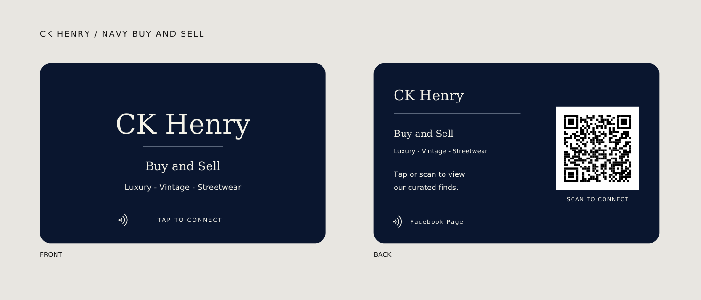

CK Henry / Navy Buy and Sell card
Dark navy with light lettering, Buy and Sell, and Luxury - Vintage - Streetwear. The QR code opens the same curated-items Facebook page.

Open card-size PDFOpen PDF with bleedFront PNG · 300 dpiBack PNG · 300 dpi


For your printer
CR80 finished size: 85.6 × 53.98 mm. PDF page 1 is the front; page 2 is the back. Print at 100% / Actual size, not Fit to page.
Use the card-size PDF for a PVC printer that needs exact dimensions. The bleed PDF has 3 mm extra on each edge (91.6 × 59.98 mm overall), with the trim area defined. Check which format your printer requires.
The card background is dark navy with light lettering. Facebook logos have been removed. Rounded corners are shown in the preview, while print artwork extends to the card edges. PDFs use RGB artwork; have your printer apply its normal color profile and run a sample before the final print. Program the NFC chip separately with https://www.facebook.com/profile.php?id=61590377440907 — the same destination as the QR code.